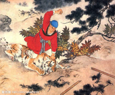

四大名著由来
中国古典长篇小说四大名著，简称四大名著，是指《水浒传》《三国演义》《西游记》《红楼梦》（按照成书先后顺序）这四部巨著。
四大古典名著是中国文学史中的经典作品，是世界宝贵的文化遗产 [1]
。此四部巨著在中国文学史上的地位是难分高低的，都有着极高的文学水平和艺术成就，细致的刻画和所蕴含的深刻思想都为历代读者所称道，其中的故事、场景、人物已经深深地影响了中国人的思想观念、价值取向。可谓中国文学史上的四座伟大丰碑。
经典小故事
 武松打虎，出自施耐庵所著《水浒传》中的第二十三回《横海郡柴进留宾
景阳冈武松打虎》，主要讲述梁山好汉武松回家探望哥哥，途中路过景阳冈。在冈下酒店喝了十八碗酒，踉跄着向冈上走去。行不多时，只见一棵树上写着：“近因景阳冈猛虎伤人，但有过往客商，应结伙成队过冈，请勿自误。”武松认为，这是酒家写来吓人的，为的是让过客住他的店，没有理它，继续往前走。太阳快落山时，武松来到一破庙前，见庙门贴了一张官府告示，武松读后，方知山上真有虎，待要回去住店，怕店家笑话，又继续向前走。由于酒力发作，便找了一块大青石，仰身躺下，刚要入睡，忽听一阵狂风呼啸，一只眼睛上翘，额头白色的老虎朝武松扑了过来，武松急忙一闪身，躲在老虎背后。老虎一纵身，武松又躲了过去。老虎急了，大吼一声，用尾巴向武松打来，武松又急忙跳开，并趁猛虎转身的那一霎间，举起哨棒，运足力气，朝虎头猛打下去。只听"咔嚓"一声，哨棒打在树枝上。老虎兽性大发，又向武松扑过来，武松扔掉半截棒，顺势骑在虎背上，左手揪住老虎头上的皮，右手猛击虎头，没多久就把老虎打得眼、嘴、鼻、耳到处流血，趴在地上不能动弹。武松怕老虎装死，举起半截哨棒又打了一阵，见那老虎确实没气了，才住手。从此武松威名大震。